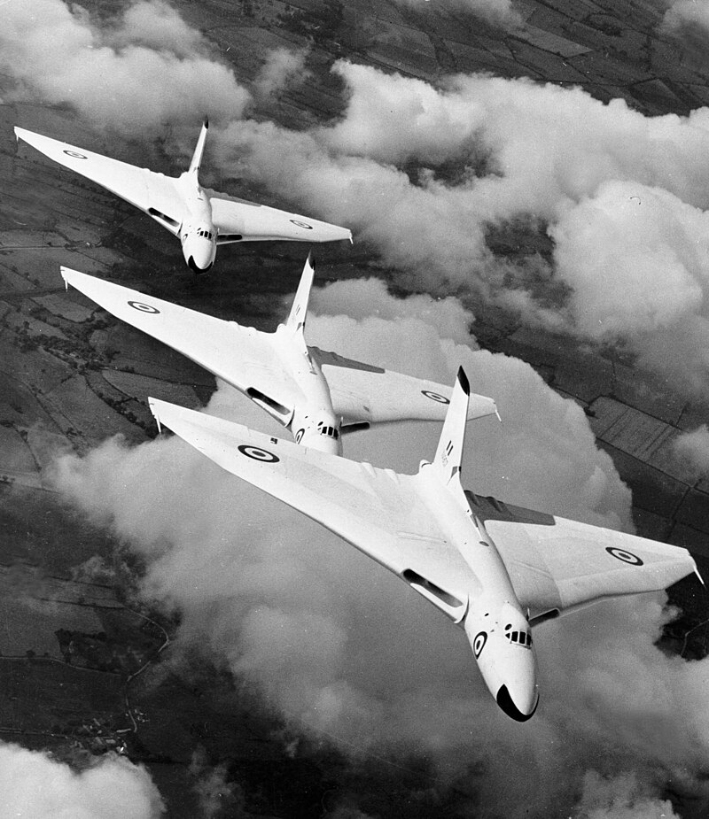
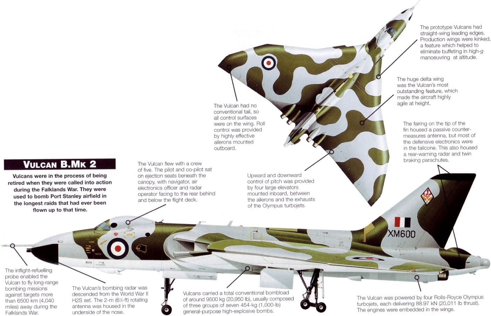
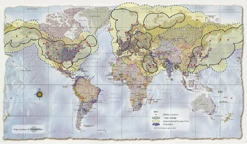
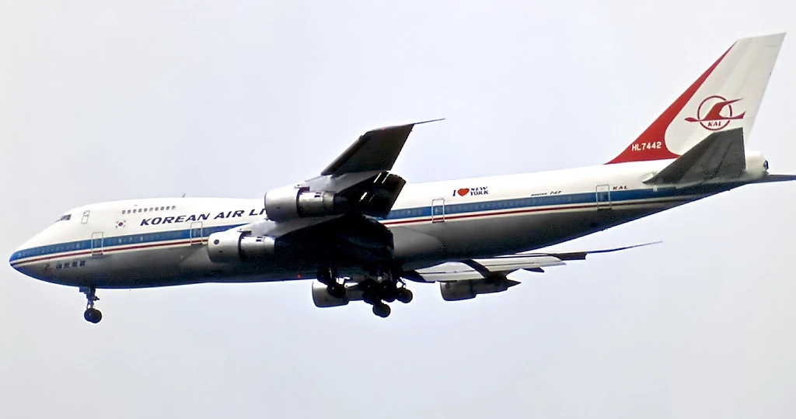
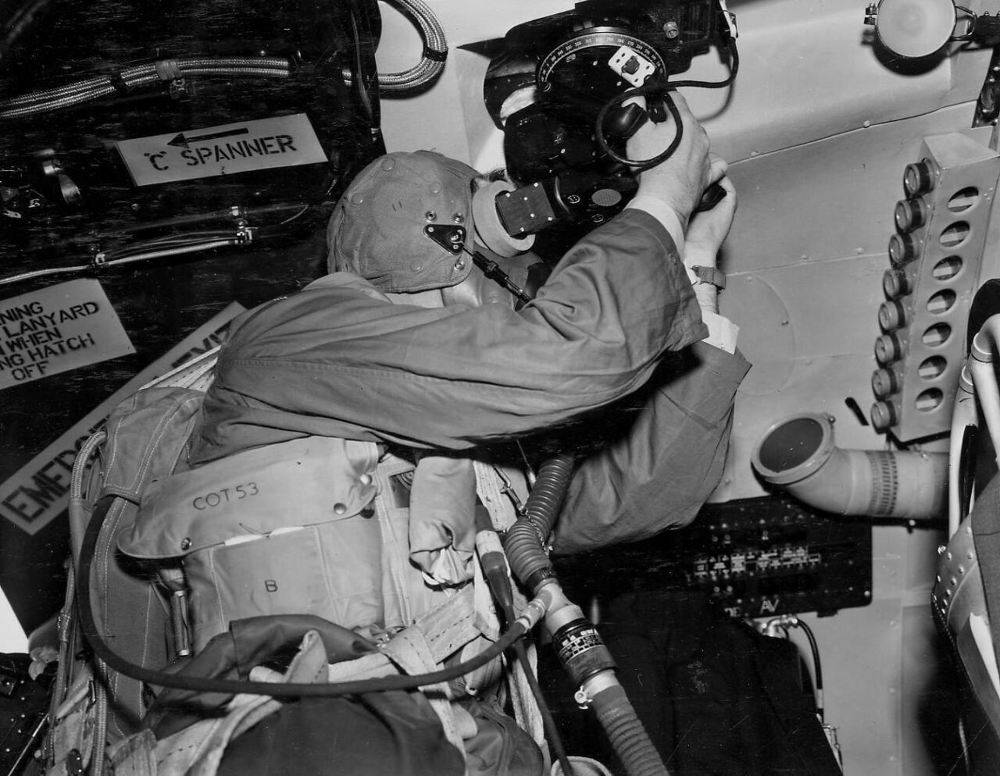
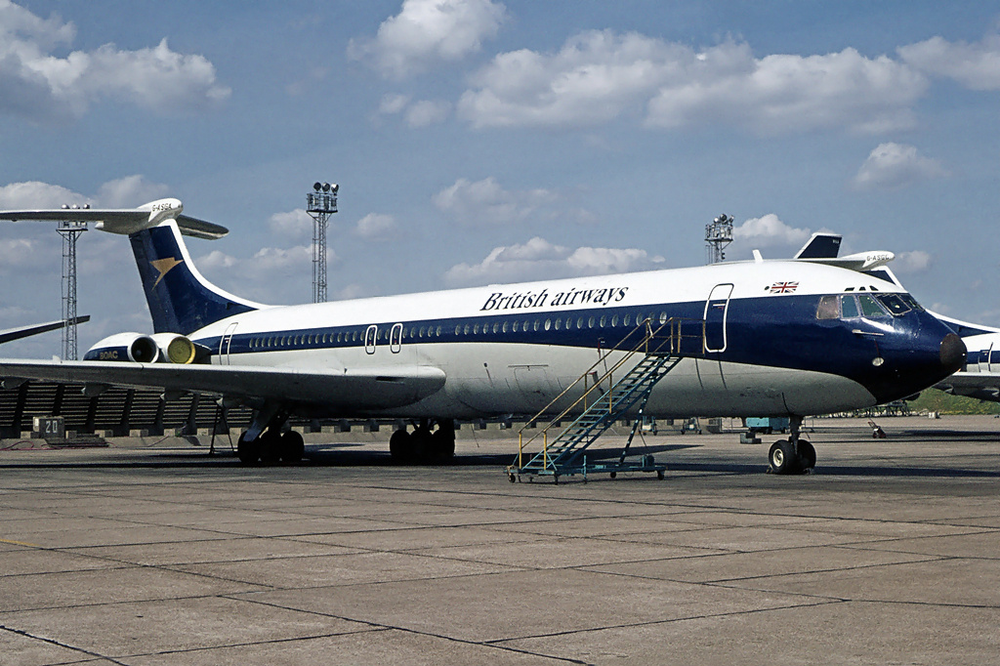
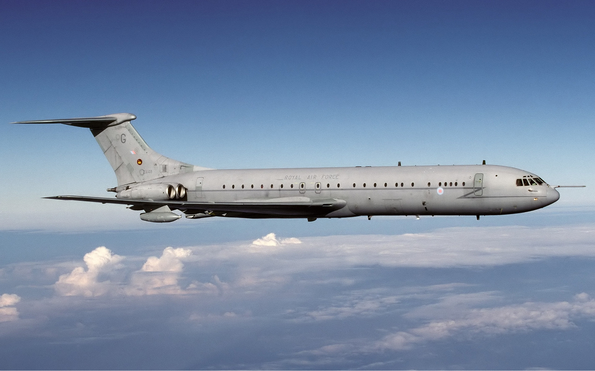

레이더 개발 이야기 (48) - 포클랜드 상공의 H2S
게시: 2023-09-21T06:30:03+09:00
<WW2에 개발된 것이 1980년대에도 사용되다> H2S와 그 개량 버전인 H2X는 이렇게 WW2에서 로열 에어포스가 승리를 거두는데 결정적인 역할을 수행. 이후에도 로열 에어포스는 물론 미공군의 폭격기에서도 계속 사용됨. 그러다 1982년 아르헨티나가 남대서양의 외로운 섬 포클랜드를 침공하면서 벌어진 포클랜드 전쟁에서도 활약함. WW2 때 개발된 레이더를 1980년대에도 썼다고?? 의외지만 진짜임. 일단 그렇게 의도치 않게 장수한 이유는 영국의 경제적 몰락 때문. WW2에서의 진정한 승자는 누가 뭐래도 미국. WW2를 거치면서 산업 시설이 파괴되지 않은 유일한 선진국으로서 사실상 자유세계를 석권. 그에 버금가는 승자는 소련. 잠재적 경쟁국이었던 독일을 철저하게 파괴하고 동서독으로 분할하여 재기를 막은 뒤, 동유럽을 석권하고 공산주의를 전파하여 미국과 함께 세계를 양분. 그에 비해 영국은 비록 승전국이었지만 그동안 축적했던 부를 전비로 다 날려먹었을 뿐만 아니라 식민지도 모두 상실. 제국으로서의 수명은 사실상 끝남.

(예전에 전세계 어린이들의 상상력을 자극했던 Avro Vulcan 폭격기. 굉장히 아방가르드한 모습이지만 정작 첫 비행은 1952년. 굉장히 오래된 물건임.) 그런 와중에도 대영제국이라는 자존심 유지를 위해 장거리 폭격기와 항공모함을 개발 및 보유하고 있었으나, 1970년대 유가 파동을 거치면서 영국 경제는 큰 타격을 입었고 더 이상 제국에 어울리는 전력 유지가 불가능해짐. 영국이 자랑하던 V 폭격기 3종인 Valiant, Vulcan, Victor는 모두 50년대에 개발된 것으로서 80년대에는 이미 고물상에 가야 할 처지였음. 포클랜드 전쟁이 발발하기 직전, V 폭격기 3종 중 폭격기로 남은 것은 오직 Vulcan 뿐이었고 그나마 곧 퇴역시킬 예정이라서 유지정비도 별로 열심히 하고 있지 않았음. 장거리 비행을 위한 급유 파이프는 써본 지가 하도 오래 되어 이미 다 막히고 고장나 있었고, 폭탄창에 폭탄을 제대로 싣기 위한 폭탄 rack조차 제대로 갖추고 있지 못했음. 그 이야기는 아래 시리즈를 참조하시기 바람. https://nasica1.tistory.com/534 https://nasica1.tistory.com/539 그리고 벌컨 폭격기에 갖춰진 항법 장치는 Mk2C sextant, 즉 별을 보고 위치를 찾기 위한 천문항법용 육분의와 함께, WW2 때 활약하던 H2S 레이더. 벌컨 폭격기가 1950년 대에 개발된 것이니 어찌 생각하면 당연. 이걸로 남대서양까지 갈 수 있었을까?

(그림 좌하단에 설명이 있지만 Vulcan에 장착된 H2S 레이더는 2미터짜리 기계식 회전 레이더. 코 아래 부분에 붙어 있음.) <GPS 없어?> 1950년 대에도 유럽과 미주 사이의 대서양 여객기 항로가 이미 흔했으니 대서양을 건너 길을 찾아가는 것이 쉬울 것처럼 느껴지지만 그게 사실 전혀 쉽지 않은 일임. WW2 중 전파 항법이 발전했고, 그 결과 민간 항공기들도 LORAN (LOng-range Aid to Navigation) 시스템을 이용하고 있었음. 가령 개량형 Loran-C가 나오면서 구형 Loran-A 수신기는 시장에 중고로 팔렸는데, 이런 중고 수신기는 민간 어선들이 너도 나도 사들여 공짜로 정확한 전파 항법을 이용하는데 사용되었음. 심지어 1974년에는 여태까지 군용으로만 쓰던 Loran-C도 민간에서 쓸 수 있도록 풀어줌. 그런데 이런 전파 항법은 육지에 기반을 둔 전파 기지국이 여러개 있어야 하는 것이고 또 거리에 제한이 있는 것임. 그러다보니 LORAN 전파 항법도 전세계를 커버하는 것은 아니고 군용 및 상용 모든 면에서 수요가 많았던 북반부 유럽 미국 동아시아 일대에만 집중되어 있었음. 남미, 특히 남대서양 한복판에서는 외로운 조종사를 가이드해줄 전파 항법이 전혀 존재하지 않았음.

(개량형 Loran-C가 커버해주는 영역. 저게 닿는 곳이 미국과 유럽이 중요시하는 지역임.) 요즘이야 인공위성 기반의 GPS가 모든 것을 해결해주지만, GPS는 당시 이제 막 개발 중인 상태로서 1978년에야 첫 실험용 GPS 위성이 발사되었고, Block II GPS의 첫 위성은 1989년에야 발사되었음. 현재 우리가 쓰는 GPS가 완전히 전세계에 구현된 것은 놀랍게도 그리 오래되지 않아 1990년대.

(사진은 비운의 대한항공 007편 (KE007/KAL007). 1983년 9월 1일, 뉴욕에서 출발, 앵커리지를 거쳐 서울로 오던 중 사할린 인근에서 Su-15에 요격되어 추락. 당시 대한항공 007편은 전파 유도 및 관성항법(INS)에 의해 항로를 잡았으나 항법사의 실수로 인해 소련 영공을 침입했다고 함. GPS만 있었어도 일어나지 않았을 일. 당시 미국 대통령이던 레이건은 이 사건에 대해 보고 받고는 아직 개발 중이던 GPS가 개발 및 구현 완료가 되는 대로 조건없이 민간에게도 사용을 허락하여 이런 비극이 다시 없도록 하라고 지시. 덕분에 오늘날 우리가 스맛폰으로 자동차 네비게이션도 자유롭게 쓸 수 있는 것.) <구원은 민항기에서> 그러니 당연히 적도 인근의 아센시온 섬의 기지에서 포클랜드 섬까지 날아가야 했던 벌컨에게는 GPS도 없었고 전파 항법 장치도 쓸 수 없었음. 믿을 것은 WW2 때 랭카스터 폭격기가 길을 찾는데 사용하던 H2S 레이더와 별을 보고 위치를 찾아줄 항공 육분의 뿐. 그런데 벌컨 폭격기에 H2S 레이더를 달아놓은 이유는 그 임무가 모스크바 폭격이었기 때문. 즉 북해를 지나 러시아 내륙 깊숙한 곳의 목표물을 밤에 저공비행으로 침무하려면 지상의 지형을 보고 밤길을 찾으려 했기 때문에 H2S 레이더가 유용했던 것. 하지만 아센시온 섬에서 포클랜드 섬까지는 그냥 바다 뿐. H2S로 보고 말고 할 것이 아무 것도 없음. 그러니 남은 옵션은 딱 하나, 육분의와 항법사의 능숙한 항법 솜씨뿐. 그런데 WW2 때도 길을 잘 못 찾던 영국 공군 항법사들의 솜씨가 40년 뒤에는 많이 개선이 되었을까? 그럴 리가. 당사자인 항법사들이 16시간 동안 계속 하늘에서 별의 각도를 재며 계산을 하면서 길을 찾는 것은 너무나 힘든 일이라서 불가능하다고 고개를 절래절래.

(이건 Vulcan은 아니고, Vulcan의 자매 폭격기라고 할 수 있는 Victor에 장착된 Mk2C sextant 사용 모습) 하지만 매순간 위치를 파악해야 하는 것도 아니고 한 30분 마다 1번씩만 재도 충분할 것 같은데 왜 힘들다고 하는지 이해를 못하겠다고 하자, 색다른 핑계를 댐. 계속 재급유를 받아야 하므로 재급유 고도인 10km 고도를 유지해야 하는데, 그 고도에서는 계절 특성상 남대서양에 구름이 끼어있을 확률이 높아서 천문항법은 무리라고 항법사들이 주장. 그러나 보통 구름은 높은 구름이라고 해도 8km 이하에 있는 것이 정상. 게다가 구름이 있다고 해도 위치를 확인할 때만 살짝 구름 위로 올라가면 될 것 아닌가? 아무리 봐도 진짜 폭격 임무에서 별만 보고 항법 계산을 해낼 자신이 없었던 것이 분명. 그러나 수학 실력 없는 항법사들을 족쳐 봐야 이제 작전이 불과 10여일 뒤인데 그 짧은 기간 안에 수학 점수를 대폭 향상 시킬 수는 없는 노릇. 해법은 민항기에서 옴. 원래 민간 여객기로 개발되었다가 공중급유기로 개조된 Vickers VC10 급유기에는 벌컨 이후에 개발된 Carousel INS (관성항법장치, Inertial Navigation Systems)가 불어있었던 것. 항법사들은 신이 나서 직접 차를 몰고 인근 공군 기지에 달려가 이 INS를 떼어다 벌컨 폭격기에 붙였다고.


(원래의 Vickers-Armstrongs VC10 여객기와 그를 개조한 Vickers VC10 탱커) 결국 H2S는 무쓸모였을까? 아님. 포클랜드 섬의 위치를 찾는 것과 포트 스탠리의 정확한 활주로 위치를 파악하는 것은 완전히 다른 문제. 특히 아무 것도 보이지 않는 깜깜한 한밤중에 폭탄을 투하해야 했으므로 대충 감으로 하면 안 됨. 좁은 활주로에 딱 21발의 폭탄을 투하하러 16시간이나 날아가는 작전인데 폭탄이 모조리 빗나가면 그야말로 대참사. 그래서 사용된 것이 H2S 레이더. 포클랜드 섬에 도착한 이후, 항법사는 H2S를 작동시켜 섬의 705m짜리 우스본(Usbourne) 산의 위치를 파악. 그를 기준으로 활주로의 위치를 파악한 뒤 그에 따라 폭탄 투하. 결과는? 이미 다들 아시겠지만 혹시 모르시면 아래 링크 참조. https://nasica1.tistory.com/536
포클랜드 전쟁 잡담 - Vulcan의 폭탄
포클랜드 섬 Port Stanley의 활주로에 Vulcan 폭격기가 폭탄을 투하하겠다는 공군의 계획을 전해들은 로열네이비 원정함대의 항모 사령관 Woodward는 '뭔 쓸데없는 짓거리'라며 혀를 참. 해리어에 폭탄
nasica1.tistory.com